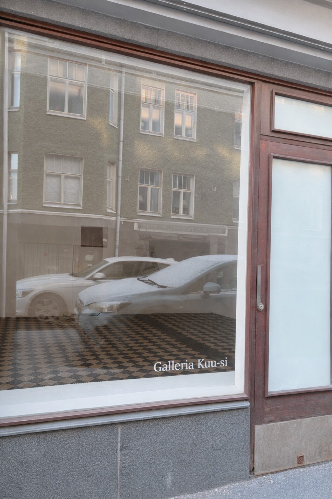
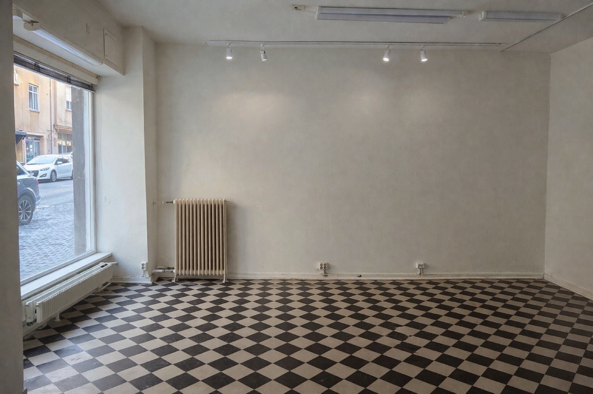

DEBUT OPENING ON MARCH 26TH, 2026.
Who is Kuu-si?
Galleria Kuu-si is an artist & curator-run, non-profit exhibition space in central Helsinki.
Located on Eerikinkatu, just a 500-meters short walk from Kamppi Metro Station, the gallery occupies a 22.5 m² street-facing space that connects art directly with the life of the city.
We’re looking to create an art lab in the city — a place for fun, bold, diverse, and experimental projects. We provide basic invigilation during open hours, help document and promote your show on social media, and offer curatorial support if needed. We do not take commissions on artwork sales.
OPEN CALL
Our next round of open call for the period of winter 2026 and Spring 2027 is in June/July 2026Stay tuned :)
Warmly,
The Kuu-si Team
ABOUT
Galleria Kuu-si is an artist-run exhibition space located at Eerikinkatu 33, Helsinki.
The name of our space, Kuu-si, is inspired by W. Somerset Maugham's The Moon and Sixpence. It reflects the challenge many artists face: pursuing creative dreams while navigating the practical realities of everyday life.
Our aim is to support the art community in building a sustainable art practice. We are seeking funding to make the space rent-free whenever possible. We also encourage artists to collaborate with our twin sister, the craft and artisan shop Honobono, located next door. This collaboration can include workshops or consignment of smaller art/design objects, helping artists create a more sustainable practice.
Contact: info@galleriakuusi.com
INS: @galleriakuu_si
Team
Curator & Founder: Ginko Hsu

Program Support: Kanny Wu

EXHIBITIONS
The grand opening of Galleria Kuu-si and our first group exhibition is scheduled for March 26, 2026. Participating artists will be announced in due course.